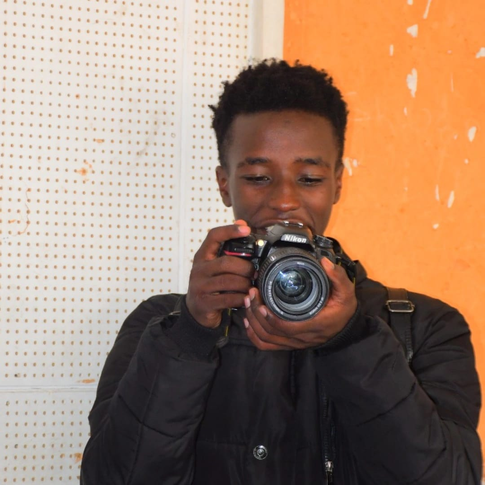

Francis Kariuki
Photography • Video Editing • Creative Design • Branding
Mikiie Edits is a creative media brand by Francis Kariuki offering professional photography, video editing, and content creation services in Nairobi and across Kenya. We deliver high-quality visuals for events, businesses, and personal brands.